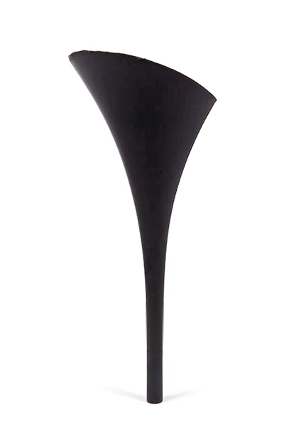
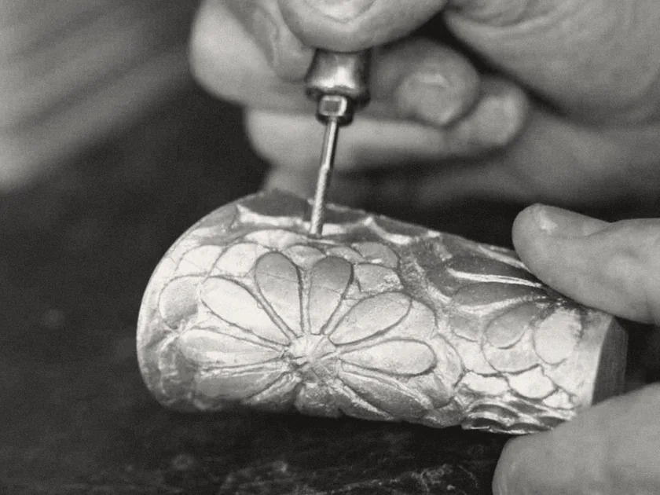
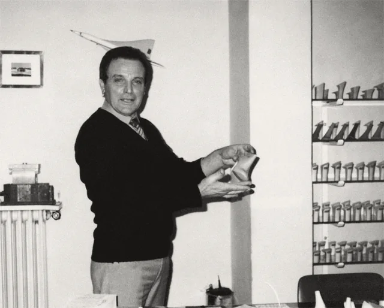
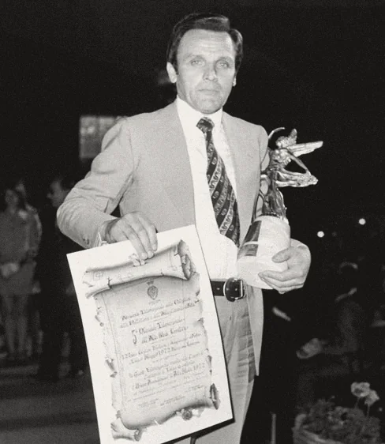

Tacchi per le calzature di lusso delle grandi griffe. Tacchificio Riviera, dal 1945.

Progettiamo e produciamo tacchi per le calzature di lusso delle grandi griffe. Nella Riviera del Brenta, dal 1945.
Inviateci il disegnoHeels for the luxury footwear of the great fashion brands, designed and made in the Riviera del Brenta, Italy, since 1945.
Il cliente presenta un disegno con la sua idea: noi la interpretiamo e la realizziamo.
The client gives us a drawing with their idea: we interpret it and make it real.

Le fasi
- Il disegno del cliente
- La progettazione
- Lo stampaggio a iniezione
- Il finissaggio
- L'imballaggio
Progettazione e fabbricazione (attraverso le fasi di stampaggio ad iniezione, finissaggio ed imballaggio) di tacchi in plastica per calzature di lusso
: è lo scopo dei nostri sistemi certificati da SGS.
Ogni formaè unica
Come le persone che la indosseranno. Sei pezzi dalla nostra galleria: plastica, plexiglas, metallo, ottone.
Every shape is unique, as the person who will wear it.


Sull'ottone, RIVIERA è inciso sul piano: la faccia che va contro la scarpa. Sulla scarpa va il nome della griffe.
Seguire le linee
Realizziamo i sogni del cliente, intagliandoli nella bellezza di un prodotto unico.
Controlliamo ogni prodotto: osserviamo i dettagli, le caratteristiche della sua composizione.
We control every product: we observe the details of its composition.

Dal 1945
Un padre, affiancato dal figlio, realizza il primo tacco in legno. Lui si chiama Giovanni Boldrin: con il figlio Valentino crea il Tacchificio Riviera.
A father, alongside his son, makes his first wooden heel. His name is Giovanni Boldrin; with his son Valentino he founds Tacchificio Riviera.


1970
Valentino Boldrin introduce la lavorazione delle materie plastiche, e il Tacchificio Riviera diventa una grande realtà artigiana della Riviera del Brenta.
Le più grandi griffe di moda del mondo calzaturiero si affidano al Tacchificio Riviera.
Inviateci il disegno
- tacchificioriviera@
tacchificioriviera.it - Sede operativa e amministrativaViale Serenissima 30, 30030 Vigonovo (VE) · Apri la mappa
- Fax e PEC+39 049 504969 · tacchificioriviera@
pec.tacchificioriviera.it
Writing from abroad
Send us your drawing: we design and make the heel.
+39 049 502844- tacchificioriviera@
tacchificioriviera.it - Operations and officesViale Serenissima 30, 30030 Vigonovo (Venice), Italy · Open the map
- Website in Englishtacchificioriviera.it/en